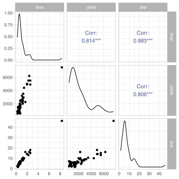
Stat 230: Applied Regression Analysis
How can we create a useful 2-dimensional picture of the relationship between \(Y\) and \(x_i\), after accounting for the other variables in the model?
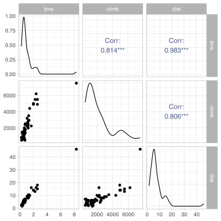
We only see the marginal relationships between pairs of variables, not the relationships after accounting for other variables
Consider two-predictor model: \(\widehat{y} = \widehat{\beta}_0 + \widehat{\beta}_1 x_1 + \widehat{\beta}_2 x_2\)
To isolate the relationship between \(Y\) and \(x_2\) after accounting for \(x_1\), we can:
Fit the MLR model
Calculate the residuals from the fitted model: \(e_i = y_i - \widehat{y}_i\)
Add the “contribution” of \(x_j\) back into residuals: \(\text{pres}_{j,i} = e_i + \widehat{\beta}_jx_{j,i}\)
Plot \(\text{pres}_j\) against \(x_j\)
After accounting for climb, what is the relationship between time and distance?
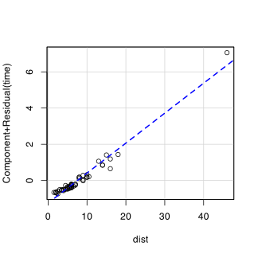After accounting for distance, what is the relationship between time and climb?
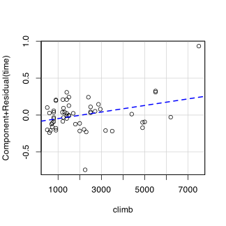We can see the “effect” of \(x_j\) after adjusting for other model terms
We can see the variation in \(y\) that remains after adjusting for other model terms
We can look for outliers that could be affecting the estimated effect of \(x_j\)
We can see if the effect of \(x_j\) is correctly modeled, non-linearity and/or non-constant variance suggest we need to correct our model form
The car package calls them component + residual plots
Note: The partial residuals in these plots are centered
True model
Fitted model
\(y = x_1^2 + 0.5x_2 + \epsilon\)
\(y = \beta_0 + \beta_1 x_1 + \beta_2 x_2 + \epsilon\)
Both \(x_1\) and \(x_2\) are numeric, roughly between -5 and 5
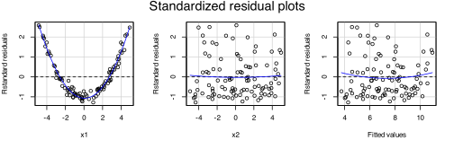True model
Fitted model
\(y = x_1^2 + 0.5x_2 + \epsilon\)
\(y = \beta_0 + \beta_1 x_1 + \beta_2 x_2 + \epsilon\)
But now \(x_1\) is strictly positive \(\rightarrow\) monotone relationship
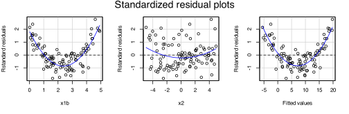True model
Fitted model
\(y = x_1^2 + 0.5x_2 + \epsilon\)
\(y = \beta_0 + \beta_1 x_1 + \beta_2 x_2 + \epsilon\)
Both \(x_1\) and \(x_2\) are numeric, roughly between -5 and 5
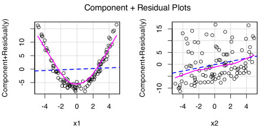True model
Fitted model
\(y = x_1^2 + 0.5x_2 + \epsilon\)
\(y = \beta_0 + \beta_1 x_1 + \beta_2 x_2 + \epsilon\)
But now \(x_1\) is strictly positive \(\rightarrow\) monotone relationship
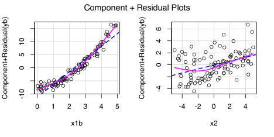Work through example on the handout
Be ready to share your thoughts (I’m going to cold call)
Consider two-predictor model: \(\widehat{y} = \widehat{\beta}_0 + \widehat{\beta}_1 x_1 + \widehat{\beta}_2 x_2\)
Fix \(x_1\) at some value, say \(x_1 = c\)
Calculate \(\widehat{y}\) for a range of \(x_2\) values: \(\widehat{y} = \widehat{\beta}_0 + \widehat{\beta}_1 c + \widehat{\beta}_2 x_2\)
Plot \(\widehat{y}\) against \(x_2\)
Whats the relationship between record time and distance, holding the total climb constant?
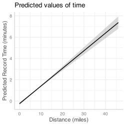Climb held constant at its mean value, 2077.32 ft
Whats the relationship between record time and the total climb, holding the distance constant?
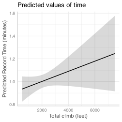Distance held constant at its mean value, 7.53 miles
The ggeffects package provides a nice way to visualize fitted models
Note
It holds the other predictors at their mean (for numeric) or mode (for categorical)
Recall the FEV model with interaction between age and smoking status:
\(\mu(y|x) = \beta_0 + \beta_1 \mathtt{smoker} + \beta_2 \mathtt{age} + \beta_3 \mathtt{age} \times \mathtt{smoker}\)
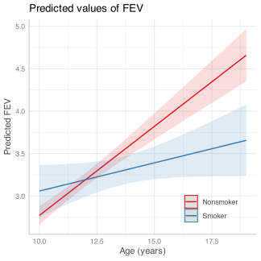Note
To get multiple fitted lines representing different groups, specify the variable you want to plot and the grouping variable in the terms argument
Work through example on the handout
Be ready to share your thoughts (I’m going to cold call)
Before you start building a model you need to identify why you are building the model.
Exploring associations
Testing a theoretical relationship
Controlling for confounders
Prediction
Reasons can be intertwined
Theory might dictate some/all variables
Designed experiment might dictate some/all variables
In other situations
Fit a “full” initial regression model where you include all of the potential variables
Check the full model for violations to the conditions, fix as needed.
Order I check/fix:
There may be “insignificant” predictor variables that you can consider dropping
You could use t-tests or extra-sums-of-squares F-tests to guide these decisions
You could use model selection criteria (AIC, BIC, adjusted R2) to guide these decisions
Sometimes you discover reasons to add variables (e.g., remedy model deficiencies, discovery of interactions)
Confirming a theory
When you want to confirm a theory, only include “extra” predictors in the model building process.
Add the variables that are “predetermined” by the theory back into the model at the end of the model building process.
Data for the 50 states
| Variable | Description |
|---|---|
sat |
average of combined verbal and math SAT |
takers |
percentage of eligible seniors who took exam |
income |
median income of families of test-takers |
years |
mean number of years of schooling |
public |
percentage of test-takers attending public school |
expend |
total state expenditure on secondary schools (in hundreds of dollars per student) |
rank |
median percentile rank of test-takers in their high school classes |
case0901 in the Sleuth
What is the impact of state expenditures on SAT scores after accounting for other factors?
Strategy: First, choose controls, then add expenditures
| term | estimate | std.error | statistic | p.value |
|---|---|---|---|---|
| (Intercept) | 144.5300 | 297.1628 | 0.4864 | 0.6291 |
| Rank | 4.4498 | 2.7466 | 1.6201 | 0.1124 |
| Income | 0.2054 | 0.1162 | 1.7672 | 0.0841 |
| Years | 24.8751 | 6.4223 | 3.8732 | 0.0004 |
| log(Takers) | -26.0915 | 17.0035 | -1.5345 | 0.1321 |
| Public | 0.6962 | 0.5513 | 1.2630 | 0.2132 |
Rank, log(Takers), and Public may not be significant - but can we trust these results?Rank and log(Takers) are highly correlated!
Let’s try dropping Rank and refitting the model…
It looks like Public can also be removed as it doesn’t explain a substantial proportion of the variability in SAT scores
| term | estimate | std.error | statistic | p.value |
|---|---|---|---|---|
| (Intercept) | -268.779 | 127.4007 | -2.1097 | 0.0405 |
| Rank | 8.509 | 0.7496 | 11.3522 | 0.0000 |
| Income | 0.230 | 0.1168 | 1.9689 | 0.0551 |
| Years | 27.564 | 6.2710 | 4.3954 | 0.0001 |
| Public | 0.267 | 0.4821 | 0.5539 | 0.5824 |
Examine the significance of expenditure after controlling for rank, income and years.
| term | estimate | std.error | statistic | p.value |
|---|---|---|---|---|
| (Intercept) | -285.4613 | 98.9617 | -2.885 | 0.0060 |
| Rank | 9.3411 | 0.7393 | 12.636 | 0.0000 |
| Income | 0.1199 | 0.1078 | 1.112 | 0.2719 |
| Years | 25.5321 | 5.3994 | 4.729 | 0.0000 |
| Expend | 1.6162 | 0.6706 | 2.410 | 0.0201 |